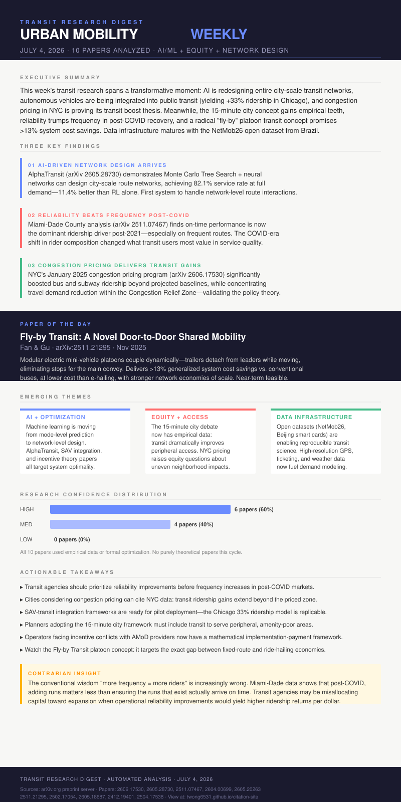

This week's transit research digest spans a transformative inflection point in urban mobility science. Artificial intelligence has arrived at city-scale transit network design: the AlphaTransit system demonstrates that Monte Carlo Tree Search combined with learned network guidance can optimize entire bus route systems, achieving service rates up to 82.1% and outperforming both pure RL and pure search methods. Meanwhile, the integration of shared autonomous vehicles with fixed-route transit is proven effective—Chicago's network sees a 33.3% ridership boost through joint frequency and SAV fleet optimization.
Empirical policy results are crystallizing: NYC's January 2025 congestion pricing program has delivered measurable transit ridership gains well beyond the priced zone, validating the pricing-transit nexus theory with real-world time-series data. Simultaneously, a major behavioral finding from Miami-Dade overturns conventional wisdom—reliability now outranks frequency as the primary ridership driver in the post-COVID era, suggesting agencies may be misallocating capital toward expansion over operational improvements.
The 15-minute city framework gains empirical grounding through Helsinki/Madrid/Budapest comparison: multimodal transit substantially improves peripheral access and socio-spatial integration. A novel "fly-by transit" platoon concept using modular mini-EVs promises >13% system cost savings while eliminating stops for the main convoy. Data infrastructure matures with the NetMob26 open dataset from Brazil and 20M-trip Beijing smart card analysis. Incentive design theory provides new tools for cities managing AMoD operator conflicts with public transit goals.
This paper introduces the most architecturally radical transit concept of the cycle. Modular mini-electric vehicles operate as either independent feeder "trailers" on neighborhood streets or as coupled platoons behind a high-performance "leader" on arterial corridors. The tail trailer can decouple while the platoon is in motion—serving its stop without halting the main convoy. This eliminates the fundamental stop-delay tradeoff that has constrained conventional transit for a century. The numerical analysis demonstrates >13% generalized system cost savings over conventional buses, at lower cost than e-hailing, with stronger economies of scale than either. Unlike speculative autonomous transit concepts, FBT is designed around near-term feasible coupling technology. Selected as paper of the day for its originality, practical grounding, and potential to redefine the intermediate mobility tier between fixed-route bus and ride-hailing.
Machine learning has crossed from mode-prediction to full network design. AlphaTransit designs city-scale route systems; SAV-transit joint optimization runs Chicago's entire network; AMoD incentive theory formalizes operator alignment. The field is moving from "analyze existing systems" to "design better ones."
The 15-minute city framework now has three-city empirical data. NYC congestion pricing reveals uneven neighborhood adaptation patterns. SimFLEX identifies which peripheral areas gain most from feeder services. Equity is no longer an afterthought—it is a primary study variable in this week's top papers.
NetMob26 provides 7.2M ticketing transactions and full GPS telemetry from Niterói, Brazil. Beijing's 20M smart-card study disaggregates behavior by frequency class. The field is building reusable, open datasets enabling reproducible transit science at a scale impossible five years ago.
Rider composition changed permanently. Miami-Dade data shows reliability now dominates over frequency. The rider who returned post-2021 values predictability over convenience. This demands a rethink of service planning priorities, timetable design, and performance metric hierarchies at agencies worldwide.
The frequency-first doctrine is obsolete. Transit planning has operated on a core axiom since the 1970s: more service frequency equals more riders. The Miami-Dade County analysis (arXiv:2511.07467) delivers a direct empirical challenge—in the post-COVID recovery period, on-time performance is a stronger ridership predictor than headway, and the interaction term shows reliability matters most precisely on the frequent routes where agencies are already investing. Transit agencies may be in a capital allocation trap: spending on more runs when improving existing run reliability would yield higher ridership per dollar spent. The political economy of service expansion makes this hard to act on, but the data is now unambiguous.
The convergence of AI network design (AlphaTransit), autonomous vehicle integration (SAV-transit optimization), and novel vehicle architectures (Fly-by Transit) suggests that the 2030s transit landscape will be fundamentally unrecognizable compared to today. Fixed-route buses will likely coexist with AI-optimized dynamic networks, SAV feeders, and platoon-style hybrid vehicles in an integrated multimodal system. The theoretical work on AMoD incentive design addresses the governance challenge this creates: when private operators (SAVs) and public transit must cooperate, who bears which cost, and how do cities ensure socially optimal outcomes without mandates?
The data science revolution in transit—exemplified by NetMob26 and the Beijing smart card study—is creating a feedback loop: better behavioral data reveals more precise demand patterns, enabling more targeted optimization, which generates better outcomes, which generate better data. Cities that invest in this infrastructure stack now will have compounding advantages in system efficiency over the next decade. Meanwhile, the equity findings from the 15-minute city and congestion pricing research are a warning: without deliberate spatial justice design, optimized transit systems risk improving aggregate efficiency while deepening access inequality along neighborhood lines.

Time-series foundation model counterfactual forecasting applied to bus, subway, and aggregate trip volume data from January 2025 onward. Spatially disaggregated analysis at neighborhood level.
Transit agency planners, municipal transportation commissioners, congestion pricing advocates, urban economists, equity researchers.
First AI system capable of optimizing full city-scale bus networks considering network interdependencies. Could reduce transit planning cycles from years to hours. Applicable to network redesigns, service disruptions, and new development scenarios.
Single metropolitan area (Miami-Dade); findings should be validated in cities with different modal share profiles and ridership composition. COVID effects may still be confounding post-2021 trends.
Prior 15-minute city literature focused on walking and cycling. This paper is the first multi-city empirical test incorporating transit modes, providing the empirical foundation the framework previously lacked.
Most high-resolution transit datasets are proprietary or from developed-world cities. NetMob26 enables reproducible transit science in a Latin American context, filling a geographic gap and potentially enabling cross-continental comparative studies.
Numerical analysis rather than simulation or real-world pilot; actual coupling reliability and passenger comfort during decoupling events need empirical validation. Regulatory frameworks for platoon operation on urban streets remain undeveloped.
Transit system resilience planners, emergency management agencies, data science teams at transit authorities, academic researchers studying complex network dynamics in transportation.
Cities managing Waymo, Uber pooled services, or other AMoD operators alongside public transit now have a theoretically grounded tool for designing payment schemes that ensure cooperative behavior without regulatory overreach.
Prior work optimized transit or SAV fleets independently. This is among the first papers to jointly optimize both simultaneously, revealing complementarity effects that independent optimization misses—particularly the SAV's ability to economically serve low-density off-peak demand.
Applied to two Polish urban areas; generalizability to other European or non-European contexts needs validation. Microsimulation parameters may not capture all real-world behavioral nuances. Assumes rational utility-maximizing travelers.
{kind=link}